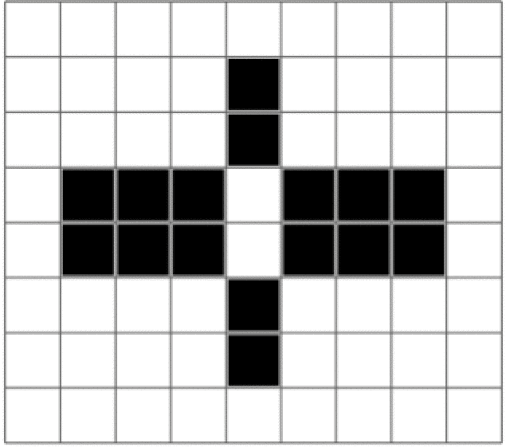
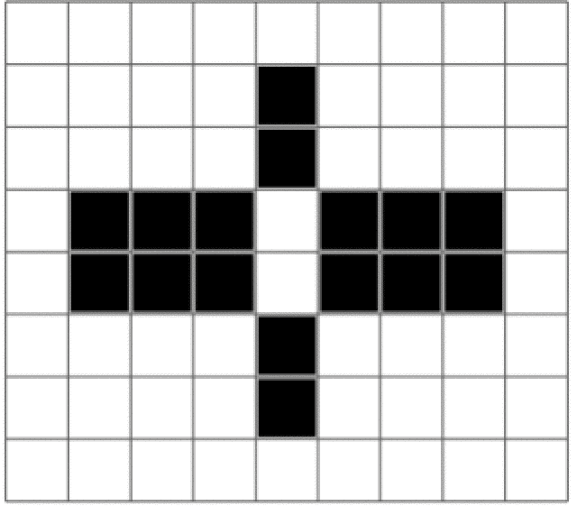

Ratkaisu
 



Tämä on tietojenkäsittelyä!
Tietokoneohjelmissa mustavalkoiset kuvat on yleensä koodattu käyttämällä numeroita "1" ja "0" kuvaamaan mustia ja valkoisia pikseleitä (ruutuja).
Tässä tehtävässä piti värittää osa kuvan ruuduista annetulla väritystoiminnolla. Toiminto oli toteutettu siten, että hiirellä valitun alueen jokainen "0" (valkoinen ruutu) korvattiin mustalla ruudulla ("1"), ja jokainen "1" (musta ruutu) korvattiin valkoisella ruudulla ("0").
Nykypäivän tietokone voi yhdessä sekunnissa suorittaa satoja miljardeja tällaisia toimintoja!
Lisäksi tietokone ei väsy koskaan. Se voi jatkaa toimintojen suorittamista samalla nopeudella pitkiäkin aikoja.
Katso lisää esim. https://en.wikipedia.org/wiki/Binary_image (englanniksi).